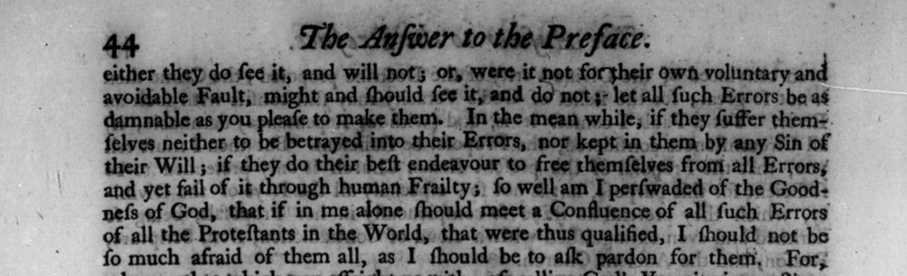

“As I should be to ask pardon for them” (p. 44)
English: Works, London 1742, “The Answer to the Preface”, p. 44, scan n51. Long s modernised; Chillingworth’s spelling kept. Highlighted: Lecky’s quotation.

[p. 43] … When therefore you can shew, that in this and all other their Controversies, God hath interposed his Testimony on one side or other; so that [p. 44] either they do see it, and will not; or, were it not for their own voluntary and avoidable Fault, might and should see it, and do not; let all such Errors be as damnable as you please to make them. In the mean while, if they suffer themselves neither to be betrayed into their Errors, nor kept in them by any Sin of their Will; if they do their best endeavour to free themselves from all Errors, and yet fail of it through human Frailty; so well am I perswaded of the Goodness of God, that if in me alone should meet a Confluence of all such Errors of all the Protestants in the World, that were thus qualified, I should not be so much afraid of them all, as I should be to ask pardon for them. For, whereas that which you affright us with, of calling God’s Veracity in question, is but a panick Fear, a Fault that no Man thus qualified is or can be guilty of; to ask pardon of simple and purely involuntary Errors is tacitly to imply, that God is angry with us for them, and that were to impute to him the strange Tyranny of requiring Brick, when he gives no Straw; of expecting to gather, where he strewed not; to reap, where he sowed not …
Lecky (vol. II, ch. IV, text at note 84) quotes the highlighted words accurately in modern spelling, with two small changes: “If men do their best endeavours” for “if they do their best endeavour”, and “so well I am persuaded” for “so well am I perswaded”. His note 93 dates the book 1637; the first edition’s catalogue date is 1638 (EEBO scan, title page not viewed).
Further down the rabbit hole
Sources that Lecky cites in the notes next to the ones that cite this page.
- Milton, AreopagiticaTruth torn to pieces like Osiris, and why the search must not be licensed
- Milton, Of True ReligionMilton’s last pamphlet: toleration for every Protestant, none for the Mass
- Neal, The History of the PuritansA boy king signs a death warrant in tears, and the Presbyterians’ heresy law of 1648
- Taylor, A Discourse of the Liberty of ProphesyingLecky quotes Taylor accurately on water and Spirit
- Harrington, A System of PoliticsA seventeenth-century republican predicts the fall of the French Church and Crown
- Baxter, A Holy CommonwealthA Puritan’s syllogism against toleration


Backlinks
Every place in Rationalism in Europe that links to this page (generated automatically when the site is built).